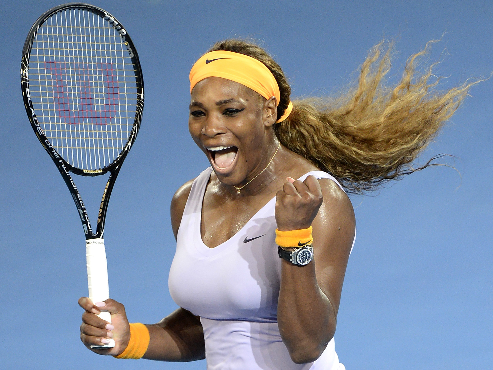
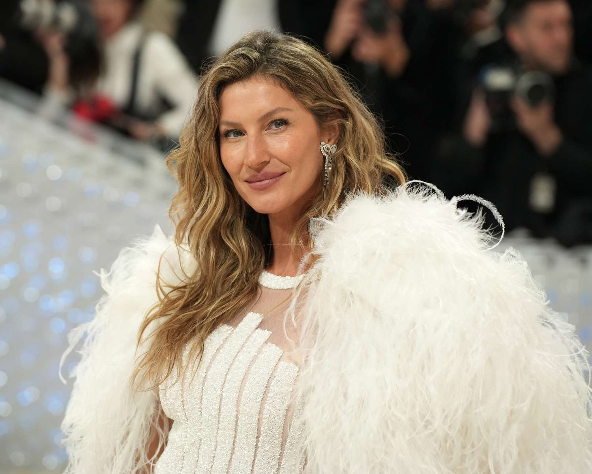

Fitness, yalnızca fiziksel sağlık için değil, aynı zamanda zihinsel ve duygusal iyilik hali için de son derece önemlidir. Dünyaca ünlü isimler de fitness yolculuklarında önemli adımlar atarak hem sağlıklı kalıyorlar hem de hayranlarına ilham veriyorlar. Bu sayfada, ünlülerin fitness yolculuklarından ilham verici örnekler bulacaksınız.
Ünlülerin Fitness Hikayeleri
Chris Hemsworth: Thor'un Gücü
Chris Hemsworth, Thor karakteri için geliştirdiği kaslı vücutla tanınan bir isim. Hemsworth, 2011’de "Thor" filmi için yaklaşık 20 kilo kas kazanarak fiziğini önemli ölçüde değiştirdi. Bu süreçte, düzenli güç antrenmanları, beslenme takviyeleri ve vücut ağırlığı egzersizleri yaptı. Hemsworth, fitness’a olan bağlılığını "Sağlıklı bir yaşam tarzı benimsemek, enerjik olmak ve vücuda yatırım yapmak için harika bir yol" şeklinde özetliyor.
Serena Williams: Tenis ve Fitness
Dünya çapında tanınan tenisçi Serena Williams, profesyonel tenis oyunculuğunun yanı sıra güçlü ve dayanıklı bir vücuda sahip olmanın da önemini vurguluyor. Williams, sadece tenis değil, aynı zamanda güçlendirme egzersizleri, yoga ve koşu gibi farklı aktivitelerle de fitness seviyesini yüksek tutuyor. "Fitness, sadece daha iyi performans göstermek için değil, yaşam kalitesini artırmak için de çok önemli." diyor.
Dwayne "The Rock" Johnson: Asla Durmak Yok

Dwayne Johnson, fitness dünyasının en çok tanınan isimlerinden biri. Aktif bir şekilde güreş ve film kariyerine devam ederken, aynı zamanda sıkı bir antrenman rutiniyle fiziksel formunu koruyor. Johnson, sabahları erken saatlerde başlamak üzere günlük 4 saatlik antrenman programına sadık kalıyor. “Hedeflerim büyük ve durmak yok. Yola çıktığınızda her şeyin mümkün olduğunu göreceksiniz,” diyor Johnson.
Gisele Bündchen: Yoga ve Denge
Ünlü süpermodel Gisele Bündchen, sağlıklı yaşam tarzı ve fitness konusunda her zaman örnek bir figür olmuştur. Yoga, meditasyon ve doğal beslenmeye büyük bir ilgi gösteren Bündchen, bu alışkanlıkları tüm yaşamına dahil ediyor. “Vücudunuz, zihninizle uyum içinde çalıştığında her şey daha kolay olur. Yoga, sadece esneklik değil, aynı zamanda içsel dengeyi bulmanızı sağlar” diyor.
Will Smith: Zihinsel ve Fiziksel Sağlık
Will Smith, fitness’ın sadece fiziksel değil, zihinsel sağlık için de önemli olduğunu vurguluyor. Smith, fitness’ı sadece fiziksel görünümünü iyileştirmek için değil, zihinsel netlik ve genel yaşam kalitesini artırmak için bir araç olarak kullanıyor. Haftada 5 gün, güç antrenmanları ve kardiyo seansları yaparak fit kalmayı sürdürüyor. “Herkesin sağlıklı olması gerekmez, ama sağlıklı olmak bir yaşam tarzı olmalı” şeklinde açıklıyor.
Fitness'ın Sadece Fiziksel Olmadığını Unutmayın!
Bu ünlülerin fitness yolculukları, sadece kas yapma veya daha iyi görünme hedefiyle sınırlı değildir. Fitness, aynı zamanda bir yaşam tarzıdır. Zihinsel sağlığı iyileştirmek, vücudu daha güçlü hale getirmek ve yaşam kalitesini artırmak için bir araçtır. Her birinin fitness yolculuğu, kendi kişisel hedeflerine ulaşmak için gösterdikleri çaba ve azmin bir göstergesidir.